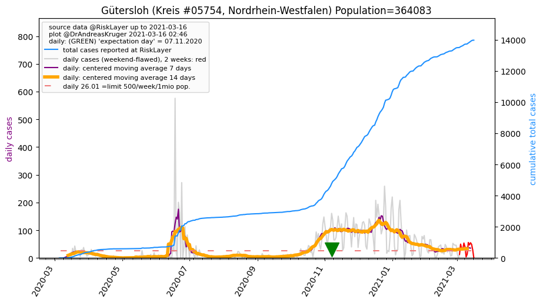
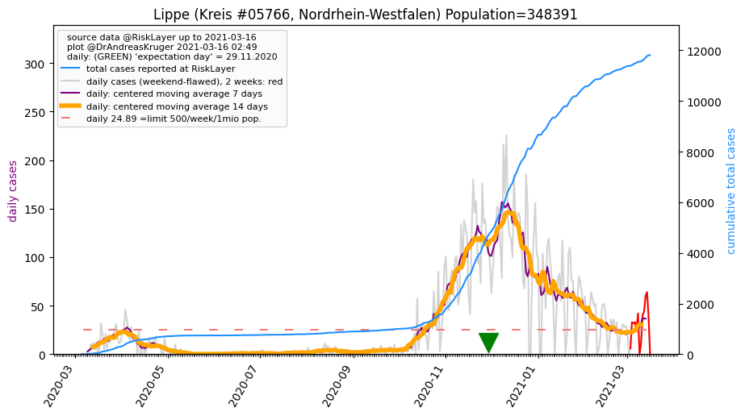
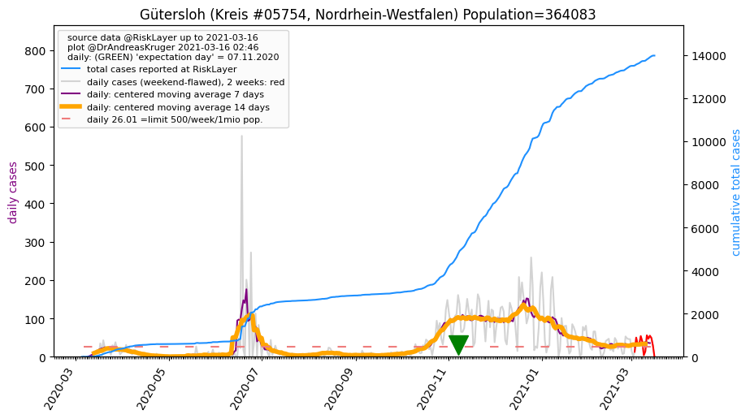
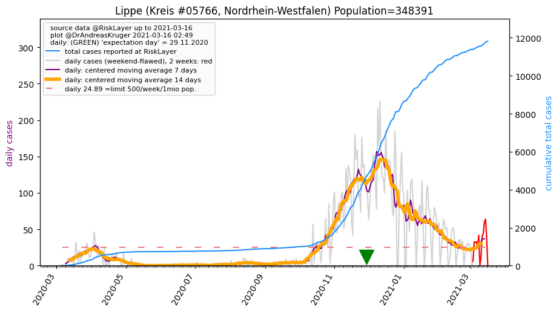

")
")
")
")

")
")
")
| Gütersloh_KR (0.0 km)  |
Bielefeld_KS (15.7 km) |
Warendorf_KR (27.9 km) |
| Herford_KR (33.0 km) |
Paderborn_KR (39.1 km) |
Lippe_KR (41.6 km)  |
| Soest_KR (41.9 km) |
Osnabrück_KS (43.8 km) |
Hamm_KS (47.0 km) |
All plots are regenerated with new data every night. Beware this temporary hotspot is an experimental page - it might get removed, so please do not link to it. Instead link to project http://tiny.cc/cov19de.